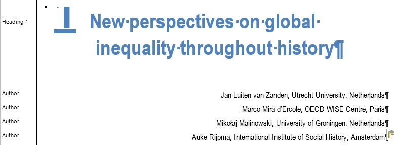
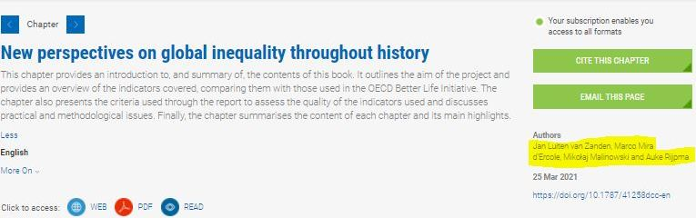
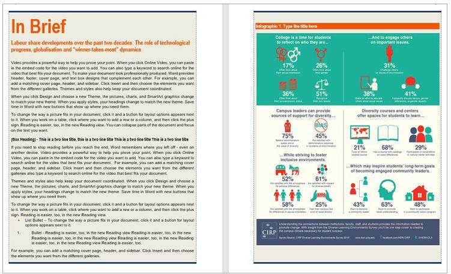
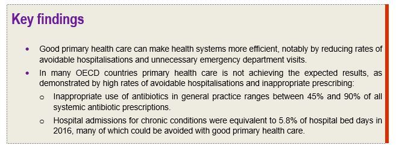
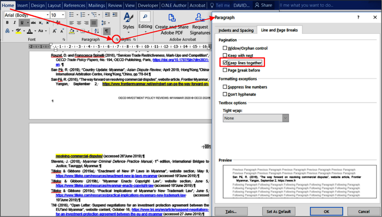
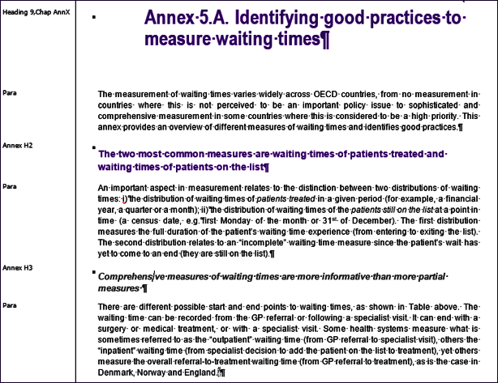
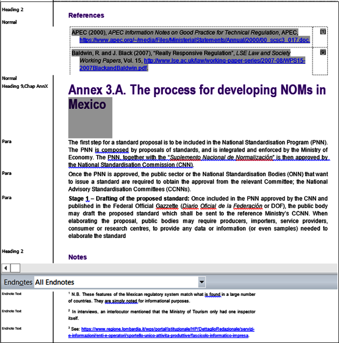

4. Preparing the body
Consult Sample O.N.E Author ODPub
Choose numbering for O.N.E Author via the Multilevel List
All chapters are numbered.
Each chapter must include an abstract of 100-150 words (mandatory) (see OECD Style Guide
Do not include abstracts for parts (mandatory).
If there is no abstract, the first paragraph of the chapter will be extracted in OECD iLibrary as the default abstract.
When a chapter is final, run the Quality Checks
4.1. Author
Authors in chapters
There are some changes when submitting the manuscript to PAC via the KAPPA submission in the case of a publication containing authors. Please see this guideline for more information: Authors in chapters
It is advisable to add the names of authors under the chapter heading (Heading 1). Author names are visible in OECD iLibrary under each component. Do not insert any endnote on an author name.
The authors must be registered as below:
First name, surname, role/function, organization name, country/city, separated by commas.
1View/Draft (see Section 1.1)

2Result in OECD iLibrary

3Display in the Webbook
4.2. Abstract
Each chapter must have an abstract (100-150 words is mandatory).
This information will appear in Kappa at component level and will be exported to OECD iLibrary.
Tip
An abstract should not contain any list or note. Lists are lost when exporting to OECD iLibrary.
4.3. How to use an In Brief box
In Brief: available under the O.N.E Author add-in/Insert Elements.
In Brief is a summary of the opening chapter of two pages. It can contain text, an infographic, a key figure or a table representing basic information at the chapter level.

Mandatory
Do not delete In Brief title.
Each In Brief box should have a separate title in addition to “In Brief”.
If notes are to be included in the In Brief, put it at the end of the box.
4.4. How to use a Key Box
Available under O.N.E Author add-in/Insert Elements.
Used for essential information. Must not be more than one page.
Key Boxes are not displayed in the Table of contents.

4.5. References

The OECD disseminates its content by components. Each chapter (and front and back matter) will need to be provided in separate Word documents.
To facilitate the management of the bibliography, the best approach is to work in a separate Word file per chapter, this will allow you to automatically generate a bibliography for each chapter and make the links active in digital outputs (Webbook and Epub).
Present references consistently according to the OECD rules and conventions
Incomplete or inconsistent bibliographies also decrease the chances of listed titles being picked up in cross-referencing tools online.
You can prepare your bibliographical references with the Reference Management
Complete in the Manage Source the full DOI link and not just the DOI number. All links must contain http:// or https://.
Tip
It’s not good practice to insert references from another document. If you do so, and keep references active, please make sure to:
1Update the reference list.
2Run the Quality Checks.
Mandatory
If the references are inserted right after a box, you must add an empty paragraph (Para style) between both. Otherwise in XML, the references will be considered as a table.
If you use the Reference Management tool of Word, open the source manager (tab References/Manage Sources). In Current List, delete the citations not available in the Manage Sources before you insert the list of references.
For static references, make sure links are kept together on the same page, otherwise it will not work. As a tip, go to Home/Paragraph/Line and Page Break and tick Keep Lines together.

For more information
For detailed information and advice on managing sources and bibliography with Mendeley in your O.N.E document, watch the videos _ESSENTIALS: Reference management
See also :
4.6. Annex chapter

Mandatory
Annexes must have a title. Annex 2.A is not a valid title.
The numbering of the boxes/figures/tables for annexes should correspond to the numbering of the specific annex chapter.
4.7. Notes
For a better conversion to XML, it is recommended to insert endnotes instead of footnotes.
To convert footnotes to endnotes (see_ESSENTIALS: footnotes and endnotes
Notes are placed at the end of the chapter after the References and Annexes section (see O.N.E Author Checklist for valid XML

Tip
Please ensure that "Notes" have not been inserted in the field Endnotes otherwise the notes won't appear correctly in the TOC and in the bookmarks of the PDF, see My bibliography doesn't appear in the table of contents or the navigation pane
When you have finalised the body, run the Quality Checks